TENRYU Studio ユーザーマニュアル (1D)
TENRYU 1D 放射流体シミュレーションの入力デッキを、フォーム操作だけで安全に組み立てる GUI。
English version1. 概要とワークフロー
TENRYU Studio は、フォームへの入力から右ペインの Python デッキ (namelist) を常時自動生成し、検証 (validate) を経て保存・実行までを行うための GUI です。単位系は cgs + eV で、長さは cm、時間は s、温度は eV、密度は g/cm3、パワーは W を使用します。
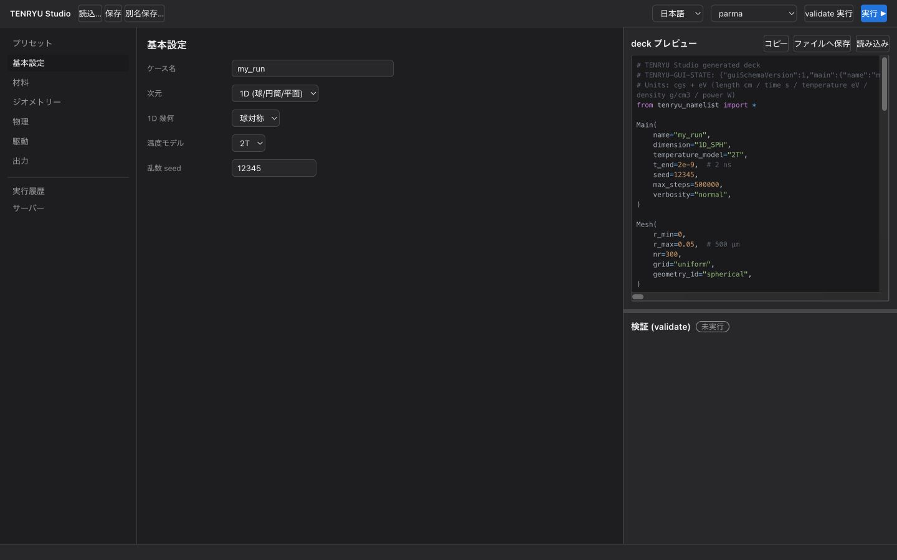
ヘッダーには「読込」「保存」「別名保存」、言語切替、実行サーバー選択、validate 実行、実行▶があります。左ナビには「プリセット」「基本設定」「材料」「ジオメトリー」「物理」「駆動」「出力」「実行履歴」「サーバー」が並び、中央に選択中のフォーム、右側に deck プレビューと検証パネルが表示されます。
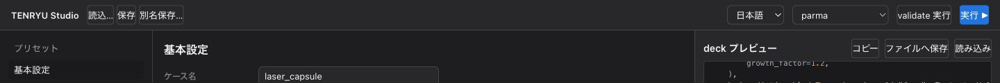
2. クイックスタート (3 分)
-
左ナビの「プリセット」を開き、1D タブを選びます。目的に近いカードの「このプリセットを適用」を押します。
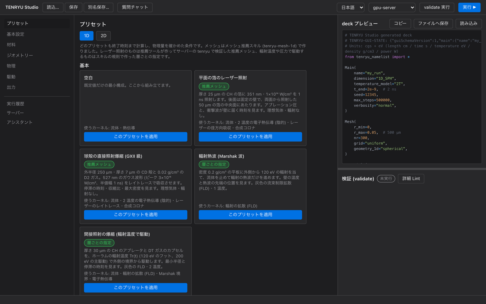
検証済みの 1D プリセットから開始すると、必要な設定一式がフォームに反映されます。 -
右ペインの deck プレビューで生成内容を確認します。
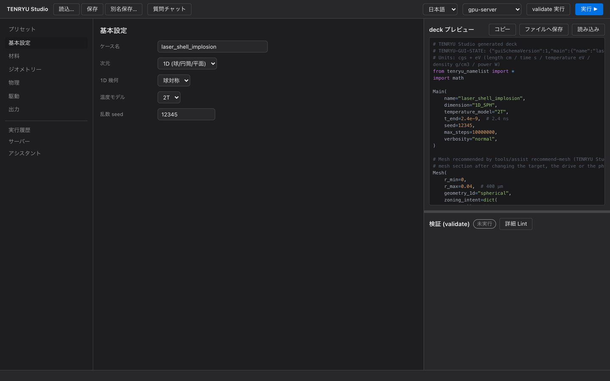
プリセット適用直後のデッキプレビュー。フォーム変更は即座に反映されます。 - 「ファイルへ保存」でデッキを書き出し、
./build/tenryu run <deck>.pyで実行します。実行サーバーを設定済みなら、ヘッダーの実行▶から投入することもできます。
3. 1D プリセット (検証の run つき)
プリセットの 1D のタブには、基本の 6 つ (空白を含む) と、オプションのカーネルを使う 6 つのプリセットがあります。どのプリセットも RTX 4090 で終了時刻まで計算した条件です (CBET のものは 2026-10-05、ほかは 2026-10-01)。2 倍細かいメッシュの計算とは、CBET のもの以外は終了時刻まで、CBET のものは 0.5 ns まで比べて確かめました。各カードの「検証の run」にその結果を載せています。メッシュはメッシュ推薦スキル (tenryu-mesh-1d) で作りました: レーザー照射のものは推薦メッシュ、輻射温度や圧力で駆動するものは層ごとの指定です (§6)。カードの「物性表が必要」は TMAT-H5 の表を使うもの、「計算が重い」は GPU 1 枚で数時間かかるものです。
| プリセット | 使うカーネル | 検証の run の要点 |
|---|---|---|
| 基本 | ||
| 空白 | 流体・熱伝導 (既定値だけ) | — |
| 圧力で駆動する衝撃波 | 流体・圧力の境界条件 | 衝撃波の速さは Rankine–Hugoniot の厳密な値と 0.01 % で一致。衝撃波の後ろの密度は 0.6 % 大きく、メッシュを細かくしても縮まりません (原因は未特定)。 |
| 輻射熱波 (Marshak 波) | 輻射の拡散 (FLD) | 1 ns で壁の電子温度 104 eV、熱波の先端は壁から 37.9 µm。メッシュの差 0.16 %。 |
| 平面の箔のレーザー照射 | 流体・2 温度の電子熱伝導・レーザーの径方向吸収・合成コロナ | 吸収率 89 %、衝撃波が後面の壁に届くのは 0.62 ns、アブレーション圧 17 Mbar。吸収エネルギーのメッシュの差 3.3 %。 |
| 球殻の直接照射爆縮 (GXII 級) | 流体・2 温度の電子熱伝導・レーザーのレイトレース・合成コロナ | 吸収率 67 %、停滞 1.83 ns、収縮比 5.0、最大密度 141 g/cm³。メッシュの差は 0.5 % 以内。 |
| 間接照射の爆縮 (輻射温度で駆動) | 流体・輻射の拡散 (FLD)・Marshak 境界・電子熱伝導 | 停滞 2.42 ns、最小半径 47 µm、収縮比 6.7。細かいメッシュでは外側の境界のセルが加速し続ける既知の欠陥があり、駆動は 2.6 ns で切っています。 |
| オプションのカーネル | ||
| 輻射駆動の平面箔 (S_N 輸送) | 輻射の S_N 輸送 (4 群・16 方向)・流体・電子熱伝導 | 衝撃波が後面の壁に届くのは 0.74 ns、アブレーションした質量 3.1 mg/cm²。S_N の反復はすべての step で収束。 |
| 非局所電子熱伝導 (SNB) | 非局所電子熱伝導 (SNB)・流体・レーザーの径方向吸収・合成コロナ | 吸収率 86 %、アブレーション圧 58 Mbar。吸収エネルギーのメッシュの差が 7.0 % で、収束の目安 (3 %) に届いていません。 |
| CBET と高速電子の直接照射 | CBET (ポート配置)・高速電子 (TPD・SRS)・レーザーのレイトレース・流体・電子熱伝導 | 1.2 ns まで計算 (RTX 4090 で 2.6 時間・11 万 step。1 step は照射の始めの約 5 ms から、コロナが広がるにつれて長くなり、終わりには約 200 ms)。吸収率 74 %。CBET の反復はすべての step で収束し (平均 3 回)、ビームの組の間でやり取りしたパワーの絶対値の和は、時間で積分して 170 J (入射の 3.9 %) です。この条件では高速電子は生じません: TPD のしきい値の指標 I14·Ln·λ/(82 Te) の最大は 0.79 (1.1 ns) で 1 に届かず、変換率は全時刻で 0 です。2 倍細かいメッシュとは 0.5 ns まで比べました: 0.5 ns までの吸収エネルギーは細かいメッシュが 1.3 % 少なく (差は 0.4 ns までに生じ、0.45〜0.5 ns の吸収率は 77.2 % と 77.4 %)、殻の平均半径の差 0.2 %・最大密度 1.6 %・ρR 0.4 %・TPD のしきい値の指標 2.0 % です。終了時刻までの比較は、細かいメッシュの計算に約 11 時間かかるため、まだしていません。 |
| 核燃焼する exploding pusher | 核燃焼 (DT)・プラズマ粘性・イオン熱伝導・輻射の拡散 (8 群)・流体 | DT の中性子の収量 3.9×10¹⁰、バン 2.74 ns。メッシュの差は収量 1.5 %。細かいメッシュでは外側の境界のセルの既知の欠陥が出ます。 |
| 物性表と多群輻射 | 表の状態方程式・表の不透明度・多群の輻射拡散 (FLD)・流体・レーザー | 吸収率 87 %、衝撃波が後面の壁に届くのは 0.64 ns。値の切り詰め (クランプ) が 940 万回起きており、何の量かは未特定です。 |
| 低温平衡の 2 層の標的 (CD と液体 D2) | 低温平衡の構成則・表の状態方程式・流体・レーザー | 吸収率 88 %、衝撃波が後面の壁に届くのは 1.36 ns。比べた量のメッシュの差はすべて 2.4 % 以内。 |
平面のプリセットでは後面 (r = 0) が固定の壁で、両面から照射した箔の中央面にあたります。衝撃波が壁に届いた後の圧縮は壁で反射した衝撃波によるもので、爆縮の停滞ではありません。
4. 基本設定
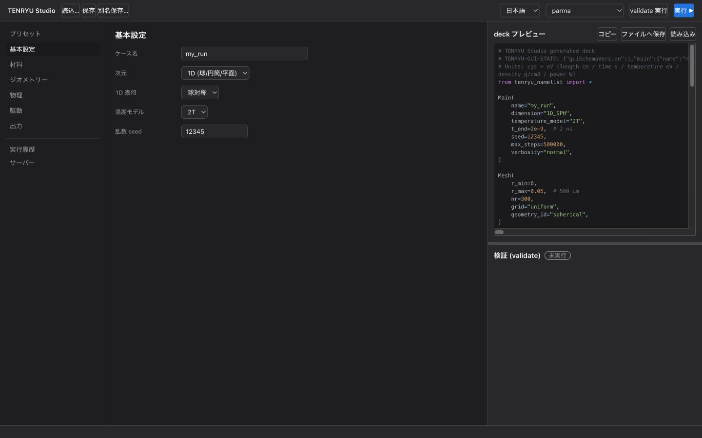
- ケース名: 出力ディレクトリ名
outputs/<name>になります。 - 次元: 本マニュアルでは 1D を使用します。2D RZ モードは本マニュアルの対象外です (別途)。
- 1D 幾何: 球対称、円筒、平面から選びます。
- 温度モデル: 通常は 2T を推奨します。1T は放射スラブのような単純問題向けです。
- 乱数 seed: 確率過程の再現に使う seed です。
- 最大ステップ数: 計算ステップ数の上限です。
- 終了時刻
t_end: シミュレーションの物理終了時刻を s で指定します。
5. 材料
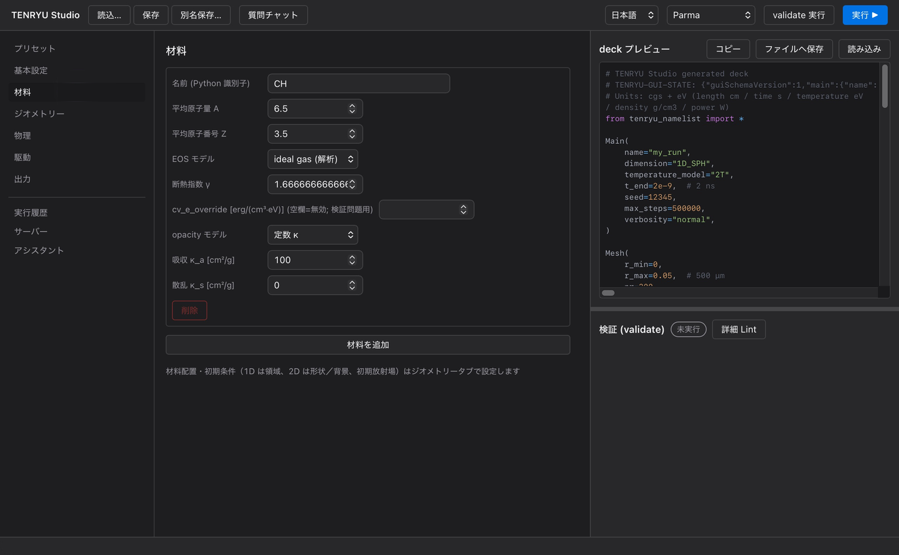
- A/Z: 原子量 A と原子番号 Z を指定します。
- EOS:
ideal_gasでは γ を指定し、必要なら cve を上書きします。TMAT テーブルを使う場合はテーブルファイルを指定します。 - 不透明度:
constantでは κa、κs [cm²/g] を指定します。テーブル不透明度も選択できます。 - 参照状態: 物理タブで
T_start未満のセルの扱いをcold_equilibriumにすると現れます。参照密度 ρ0、参照電子温度 Te0、参照イオン温度 Ti0、参照全圧 P0、体積弾性率 K0 を指定します (eos.cold_reference)。モードを選んだ時点で、その材料の最初の領域の密度と温度が入り (P0 = 0)、「初期状態から設定」で入れ直せます。K0 は材料ごとに入力します (文献値の例: 液体 D2 1.2×109 dyn/cm²、ポリスチレン 5.8×1010 dyn/cm²)。
6. ジオメトリー: 格子と領域
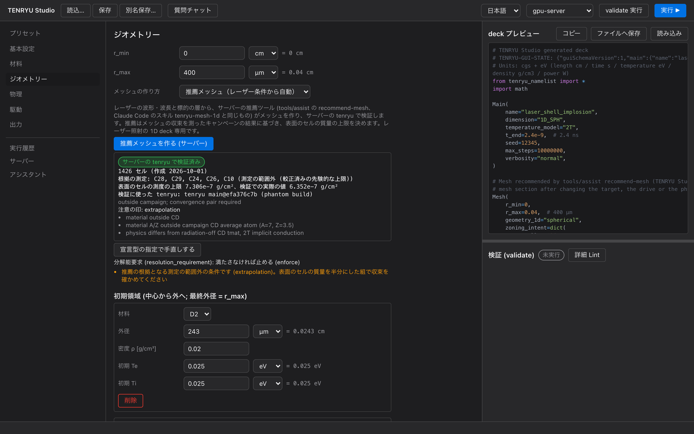
メッシュの作り方 (1D)
1D の格子は流体とともに動く Lagrange 格子です。「メッシュの作り方」で次の 6 つから選びます。作り方を切り替えても、それまでの作り方の設定は消さずに残します。
| 作り方 | deck に書くもの | 使いどころ |
|---|---|---|
| 一様 | nr・grid="uniform" |
試しの計算。表面を細かく分ける必要がある計算には向きません。 |
| graded | 区間ごとのセル数と grading |
以前からの指定。既存の deck との互換のために残しています。 |
| 推薦メッシュ | zoning_intent と resolution_requirement (apply="enforce" と経験的上限 empirical) |
レーザー照射の deck。サーバーの推薦ツールが作り、サーバーの tenryu で検証します。 |
| 層ごとの指定 | explicit_nodes (Studio が計算した節点) |
輻射温度や圧力で駆動する deck。推薦の範囲から大きく外れる条件。 |
| 節点座標の取り込み | explicit_nodes |
他のコードのゾーニングや、以前の run の格子をそのまま使う。 |
| 宣言型の指定 (zoning_intent) | zoning_intent |
推薦メッシュの手直し。測度・帯・ピン・重み分布を直接書く。 |
推薦メッシュ
「推薦メッシュを作る (サーバー)」を押すと、選んだサーバーで TENRYU のメッシュ推薦ツール (tools/assist/assist.py recommend-mesh。Claude Code のスキル tenryu-mesh-1d が使うものと同じ) を実行します。推薦ツールは、フォームの標的とレーザーの条件をサーバーの tenryu に読ませ (validate --mesh-preview)、メッシュの収束を測ったキャンペーンの結果から表面のセルの面密度の上限を決めて zoning_intent を組み、サーバーの tenryu で検証してから返します。検証を通らなかった推薦はフォームに入れません。
- パネルには、検証の状態、セル数、根拠にした測定、表面のセルの上限と検証での実際の値、注意の印、推薦ツールの警告を表示します。注意の印
extrapolationは、条件が測定の範囲の外にあり、較正済みの先験的な上限を使ったことを示します。このときは収束確認用の組で収束を確かめてください。 - 推薦は、幾何と計算領域、標的の層 (半径・密度・材料)、レーザーの波長と波形、終了時刻、温度モデル、輻射と熱伝導の設定に対して作ります。推薦の後にこれらを変えると「条件が変わりました」と表示するので、作り直してください。
- レーザー照射の 1D deck 専用です (ソルバーの分解能要求がレーザーの条件から決まるため)。推薦ツールは表面がそのままの標的を前提にしているので、物質のコロナ層 (ramp) とは併用できません。レーザーの合成コロナ (§8) を使ってください。
- サーバーには、tenryu のバイナリの上の階層に TENRYU の checkout (
tools/assist) と、python3 (3.9 以上) が要ります。 - 「宣言型の指定で手直しする」を押すと、推薦の
zoning_intentを編集できる状態に移ります (手で変えたことをパネルに記録します)。
層ごとの指定
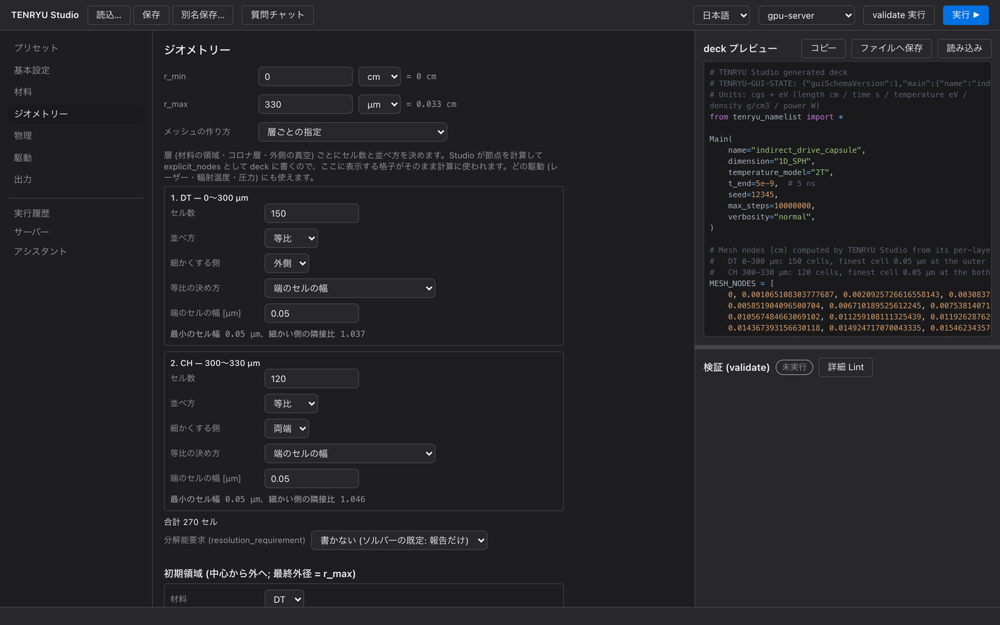
層 (材料の領域、コロナ層、外側の真空) ごとにセル数と並べ方を決めます。並べ方は等幅・等質量・等比の 3 つです。等比のときは、隣のセルとの幅の比・端のセルの幅・隣の層の端のセルと質量をそろえる、のいずれかで比を決め、細かくする側 (外側・内側・両端) を選びます。Studio が節点を計算して explicit_nodes として deck に書くので、表示している格子がそのまま計算に使われます。各層の最小のセル幅と、細かい側の隣接比を表示します。
節点座標の取り込み
節点の座標を貼り付けるか (1 行に 1 つ、またはカンマ・空白区切り。表のときは列を指定し、単位を選ぶ)、ファイル (.txt・.csv・.dat・run の凍結設定 config/<ケース名>_frozen.json) から読み込みます。「サーバーで確かめた格子を使う」は、直前にサーバーで確かめた格子 (推薦メッシュや宣言型の指定からソルバーが作ったもの) を節点の一覧として取り込みます。実行履歴の run を選ぶと、その run の格子 (凍結設定に節点の一覧があればそれ、無ければ run の deck をサーバーで確かめた格子) を取り込みます。取り込むと r_min と r_max を最初と最後の節点に合わせます。
宣言型の指定 (zoning_intent)
ソルバーの宣言型のゾーニングを直接編集します。セル数 n_cells、等分配する測度 measure (幅・面密度・線質量・セル質量)、ゾーニング用の密度の区間、材料の境界のピン、重み分布、局所の細分化、帯 (全測度に対する割合の範囲ごとの、セルの測度の下限と上限)、最小セル幅、隣接比の望ましい値と上限、区間ごとの最小セル数を指定できます。節点はソルバーが計算します。メッシュの診断には、Studio がソルバーと同じ計算で求めた節点の格子を表示し、サーバーで確かめるとソルバーの作った格子に替わります。
分解能要求 (resolution_requirement)
ソルバーは、レーザー照射の deck について、アブレーションの規則と衝撃波の規則からセルの大きさの上限 (分解能要求) を計算します。「書かない」はソルバーの既定 (報告だけ)、「報告だけ」は apply="report"、「満たさなければ止める」は apply="enforce" を書きます。推薦メッシュは enforce と、推薦の根拠にした経験的上限 (empirical) を書きます。
メッシュの診断
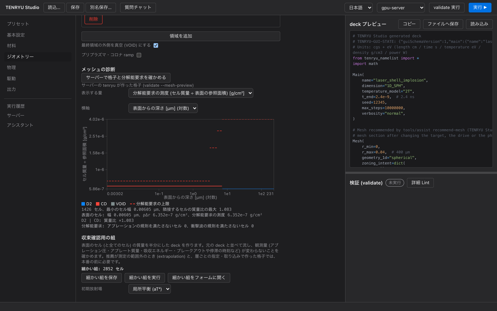
格子の性質を図と数で表示します。表示する量はセル幅、面密度 ρΔr、分解能要求の測度 (セル質量 ÷ 表面の参照面積)、隣のセルとの質量比、セルの質量から、横軸は位置 r、表面からの深さ (対数)、セル番号から選べます。図の下には、セル数・最小のセル幅・隣接するセルの質量比の最大・表面のセル・材料の境界での質量比を表示します。
「サーバーで格子と分解能要求を確かめる」は、選んだサーバーで tenryu validate --mesh-preview を実行し、ソルバーが作る格子そのものに、分解能要求の上限 (赤い破線) と上限を超えるセル (赤い点) を重ねて表示します。推薦メッシュと宣言型の指定は節点をソルバーが計算します。このボタンを押す前は、Studio がソルバーのゾーニングと同じ計算で求めた節点を表示し、ソルバーが zoning_intent を拒む場合はソルバーと同じエラーを表示します。分解能要求を enforce にした deck では、ソルバーは要求の上限を zoning_intent に加えてから格子を作るので、その上限が zoning_intent の帯より厳しい所では最終の格子が図と異なります (図の下にその旨を表示します)。フォームを変えると、表示中のサーバーの結果が古いことを示します。
収束確認用の組
表面のセル (と全てのセル) の質量を半分にした deck を作ります。一様と graded はセル数を 2 倍に、層ごとの指定はセル数を 2 倍にして比を平方根に・端のセルの幅を半分に、取り込んだ節点は各セルを体積の等しい 2 つに分け、推薦メッシュと宣言型の指定はセル数を 2 倍にして帯と測度の上限と最小セル幅を半分にします。ケース名と出力先には _fine を付けます。元の deck と並べて流し、観測量 (アブレーション圧・アブレートした質量・吸収したエネルギー・衝撃波が後面に届く時刻・停滞の時刻など) が変わらないことを確かめます。推薦が測定の範囲外のとき (extrapolation) と、層ごとの指定・取り込みで作った格子では、本番の前に必要です。「細かい組を保存」「細かい組を実行」「細かい組をフォームに開く」から使います。
領域
内側から順に材料領域を積みます。各領域には材料、外半径 rOuter、密度、初期電子温度 Te、初期イオン温度 Ti を指定します。既定では、最終領域の rOuter は r_max と一致している必要があります。
外側真空 (VOID)
「外側真空」を ON にすると、最終領域の外側が VOID 材料でマスクされます。このとき rOuter < r_max が必要です。伝導・放射は VOID を素通りしない扱いになり、床密度で真空域を充填することによる数値病理を避けられます。
プリプラズマ・コロナ ramp
外側真空が ON のとき、コロナ ramp をさらに有効化できます。最終領域表面から指数減衰する低密度コロナを、スケール長 L、範囲、ρ0、床密度で指定します。
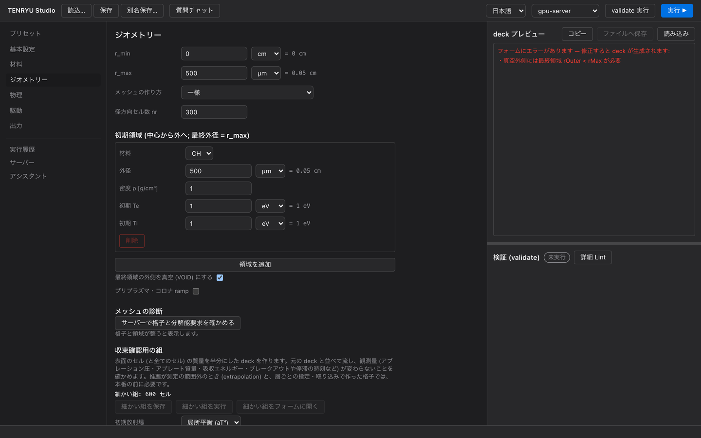
rOuter=r_max のまま外側真空を ON にすると、右ペインは赤字のエラー一覧に切り替わります。rOuter < r_max に修正するとデッキ生成が自動再開されます。7. 物理
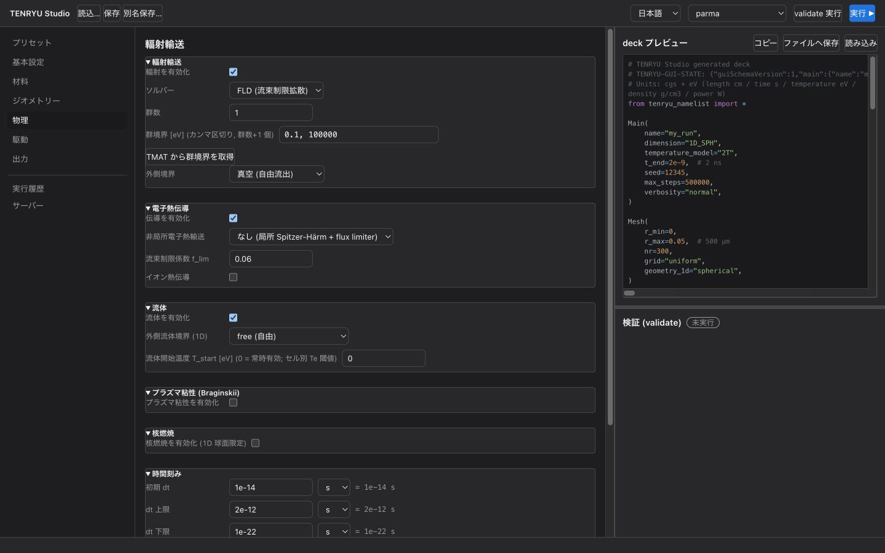
輻射輸送
輻射輸送を有効化し、ソルバーに FLD (flux-limited diffusion、流束制限拡散) を選びます。群数と群境界 [eV] を指定し、1 群なら灰色近似になります。外側境界は真空または Marshak です。Marshak 温度は定数 Tr、または駆動タブの間接照射と連動する折れ線 Tr(t) で与えられます。
電子熱伝導
電子熱伝導を有効にすると、非局所電子熱輸送モデルを選択できます。「なし」は局所 Spitzer–Härm (SH)、「SNB」は非局所モデルです。モデル選択の下にある flux limiter の係数 f_lim は、モデル切替時に SH → 0.06 (較正済みリミッタ)、SNB → 0.5 (安全キャップ) へ自動設定されます。SNB 自身が非局所抑制を担うため、小さい f のままでは SNB の物理を覆い隠します。
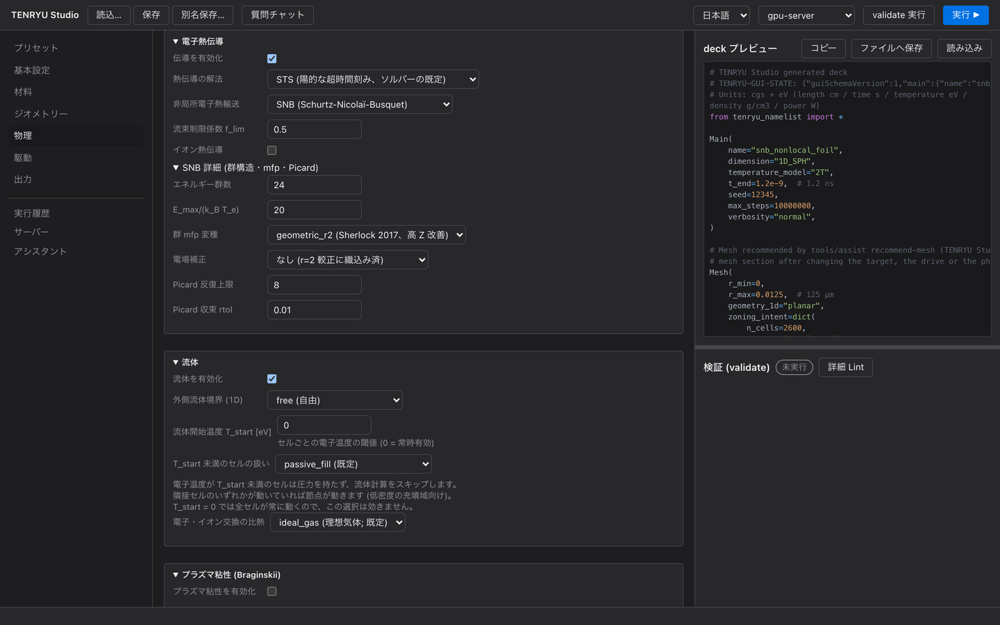
SNB の既定値は、エネルギー群数 24、Emax/(kBTe)=20、群 mfp 変種 geometric_r2 (Sherlock 2017)、電場補正「なし」、Picard 反復上限 8、rtol=0.01 です。r=2 の較正には電場補正が織り込み済みなので、local と併用すると二重計上になります。
熱伝導の解法は、STS (陽的な超時間刻み。ソルバーの既定) と陰的 (1D のみ) から選びます。陰的は熱伝導による時間刻みの制約がなく、例題集のレーザー照射の deck と多くのプリセットが使います。SNB の非局所モデルは STS でしか解けないため、SNB と陰的を組み合わせるとフォームのエラーになります。
- イオン熱伝導: Braginskii のイオン熱伝導を電子の熱伝導の後に解きます（1D・2T のみ。2D や 1T ではフォームのエラー）。有効にすると、イオン熱流束の制限係数
ion_f_lim（既定 1 = イオンの自由流束）を設定できます。 - 流体: 有効化、外側境界 (
free/reflect/pressure)、流体開始温度T_start[eV] (セルの電子温度がこの値に達するまで流体計算をしない。0 = 常時有効) を設定します。 - T_start 未満のセルの扱い:
passive_fill(既定。圧力を持たず隣接セルに追従)、rigid_wall(剛体壁として体積とエネルギーを保持、1D 専用)、cold_equilibrium(1D 専用) から選びます。cold_equilibriumでは流体計算を全セルで行い、電子温度がT_start以下のときだけ EOS を補正して、各材料の参照状態を全圧 P0・体積弾性率 K0 の力学平衡に置きます (T_startを超えると元の表に戻ります)。全材料の TMAT EOS と 2T が必要で、選ぶと電子・イオン交換の比熱がtableになり、材料タブに参照状態の欄が現れます。遷移開始比・密度範囲・逆変換の反復上限は「詳細」で変えられます。 - 電子・イオン交換の比熱:
ideal_gas(既定) またはtable(EOS 表の比熱、1D 専用)。 - プラズマ粘性: 既定は OFF です。
8. 駆動
駆動方式は「なし」「レーザー直接照射」「輻射温度 Tr(t) (間接照射)」「外部圧力 Pext(t)」から選びます。
レーザー直接照射
波長、レイトレース、波形、パワー、パルス長を設定します。1D では単一参照ビームの光学のみを指定し、方向・本数・配分は意味を持たないため表示されません。波形は矩形 (rise/fall 付き)、ガウス、折れ線テーブルから選べます。
「合成コロナ (ghost corona) を使う」を ON にすると、裸の固体の表面の外に、レーザー格子の上だけに置く希薄なコロナを作り、パルスの立ち上がりから吸収させます (NUMERICS §5.7.5)。物質のコロナ ramp の代わりに使うもので、レーザーのプリセットはすべてこれを使います。既定値 (ゴーストセル 12、密度比 0.03〜0.99、電子温度の下限 50 eV、Z̄ 1〜4、受け渡し 6 セル・減衰長 2、ブローオフへの遷移モデルあり、レーザー格子の細かさ mesh_factor 0.1、レーザー格子の外端の密度比 0.001) は、例題集と、推薦メッシュの根拠になった収束キャンペーンの設定です。「堆積の平滑化」は、レーザーの付与を流体のセルへ渡すときに隣のセルとの間で行う、質量で重みを付けた保存的な平滑化の回数と 1 回あたりの重みです。プリセットは 3 回・0.25 を使います (0 回で無効。ソルバーの既定)。
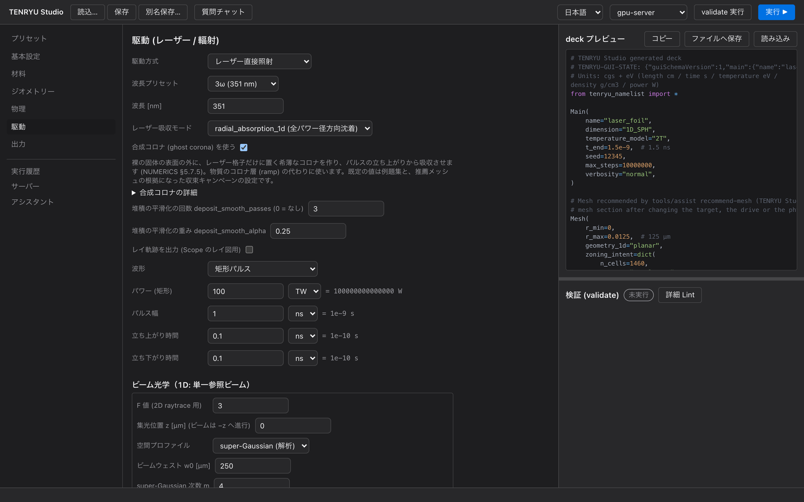
ビーム光学
f 値、スポット w0、スーパーガウス次数を設定します。GXII 検証値は f/3、w0=200 µm、m=4 です。
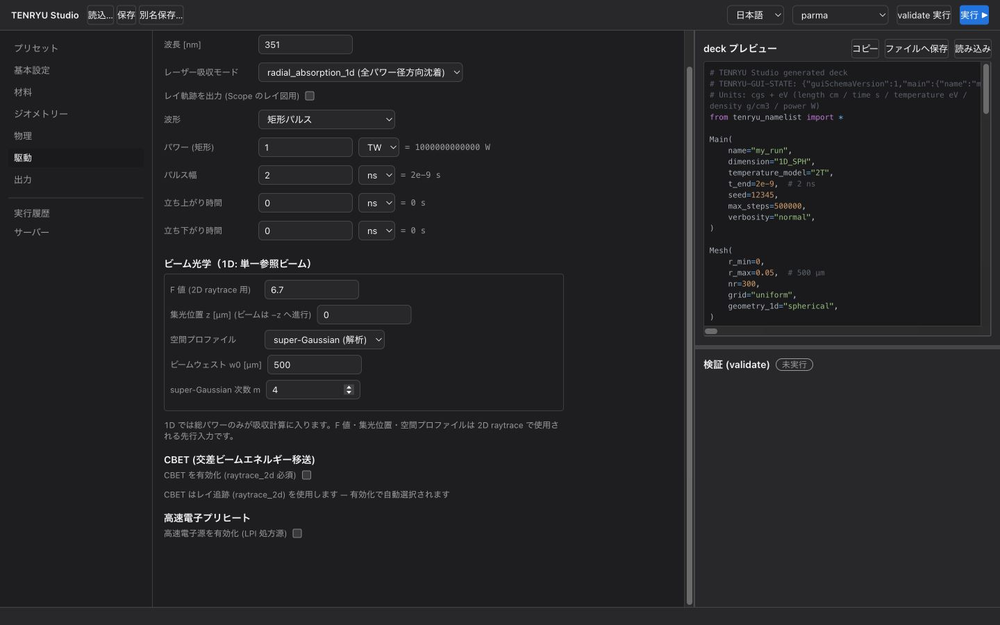
CBET
CBET を有効化すると、ポート配置プリセット (GXII 12 / OMEGA 60 / NIF 192 の理想化配置) と Δλ デチューニングなどが表示されます。多ビーム間エネルギー交換を、単一参照トレースの位相空間再構成で計算する 1D 専用実装です。
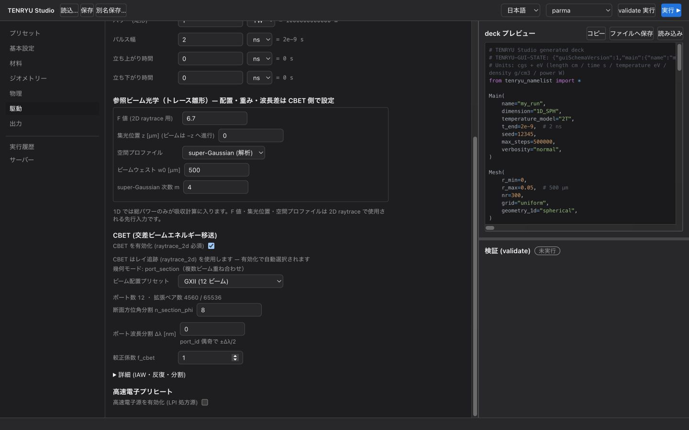
ホット電子
η(t) モデルなどを使って、高速電子の生成・輸送・沈着を付加します。
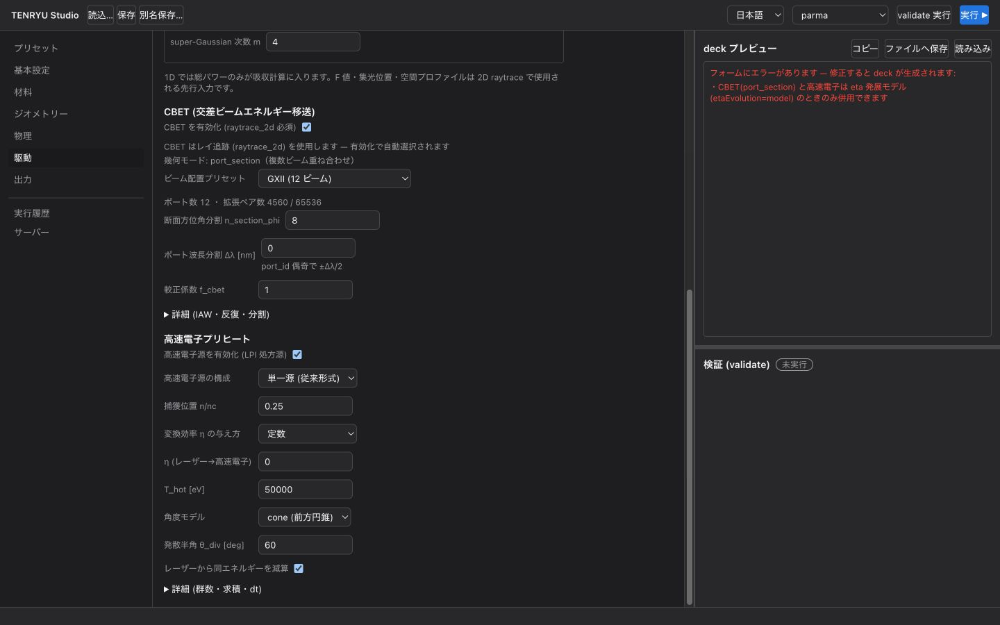
間接照射 Tr(t)
駆動方式で「輻射温度 Tr(t)」を選ぶと、Marshak Tr(t) の波形エディタが使えます。検証済みの波形例は §3 の間接照射プリセットを参照してください。
外部圧力
1D 境界に対する圧力駆動 Pext(t) を指定します。
9. 出力
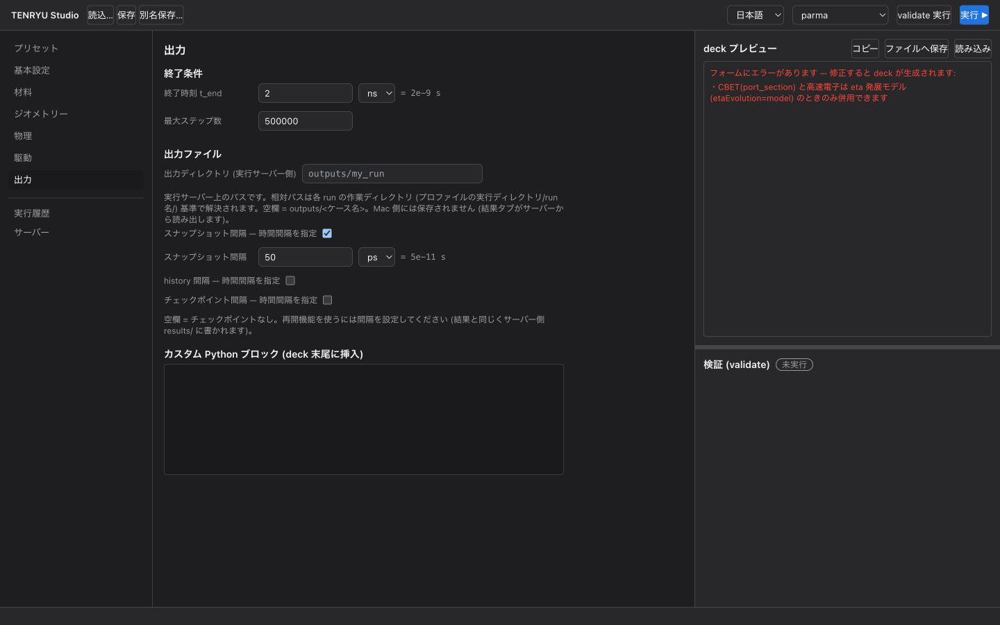
- 出力ディレクトリ: 空欄なら
outputs/<ケース名>です。 - スナップショット間隔:
plot_every_sで指定します。 - 履歴: 時系列の診断量を保存します。
- チェックポイント: 再開用データの出力を設定します。間隔を空欄にすると途中のチェックポイントは書きません。
- 終了時にチェックポイントを書く: run が終わった時点のチェックポイントを残します (
Output.write_final_checkpoint、既定で ON)。実行履歴の「続きから計算」は、これか途中のチェックポイントのどれかが無いと使えません。2026-09-30 より前の tenryu はこのキーを知らないので、そのようなバイナリで実行するときは外してください。
10. デッキの確認・保存・実行
右ペインには常に最新のデッキが表示されます。「コピー」「ファイルへ保存」「読み込み」を使ってデッキを扱えます。
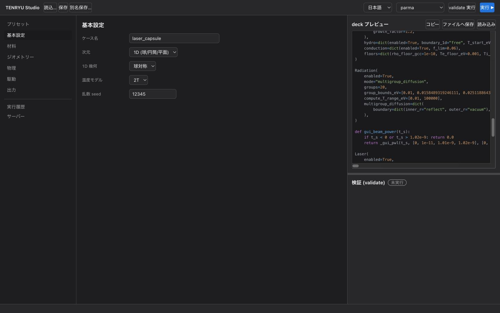
検証パネルの「validate 実行」は、選択サーバー上で dry-run 検証を行います。実行▶は選択サーバーへジョブを投入し、進行状況は「実行履歴」タブで追跡できます。サーバー未設定でも、デッキを保存して手元で次のように実行できます。
./build/tenryu run deck.py続きから計算 (run の延長)
実行履歴の終わった run にある「続きから計算…」を押すと、終了時刻と最大ステップ数の欄が開きます。延ばしたい値を入れて「続きから計算を開始」を押すと、サーバー上の同じ run ディレクトリで、同じ deck.py を変えずに、最新のチェックポイントから再開します。変えた値は tenryu run の --t-end・--max-steps として渡され、値を変えなければそのまま再開します。
- 続きの出力は同じ run ディレクトリの
outputs/<ケース名>_001(2 回目は_002) に書かれます。結果の履歴のグラフは元の run と続きをつないで表示し、続きがチェックポイントより後の区間を計算し直した場合は、その区間を続きの値で表示します。プロファイルのスナップショットは、元の run のものに続けて続きのものを並べます。「Scope で開く」で開く TENRYU Scope は、全スナップショットの先読みが終わった時点で、続きが計算し直した区間の元の run のスナップショットを一覧から除き、時空図も続きの結果で作ります。 - 最新のチェックポイントは、いちばん新しい出力ディレクトリの最後のものです。終わった時点から続けるには、出力タブの「終了時にチェックポイントを書く」を ON にして実行しておきます。途中のチェックポイントしか無い run は、そこから計算し直して延ばします。
- 終了時刻・最大ステップ数は、現在の時刻・ステップ数より大きくしてください。
LaserBeam.energy_Jを使うデッキでは、レーザーの出力の正規化は元のデッキの終了時刻までの区間のままなので、パルスがその後も続くと延ばした区間の分だけエネルギーが追加で入ります (ログの WARNING に量が出ます)。 - 値を変えた延長には、2026-09-30 以降の tenryu (
--t-end・--max-stepsに対応したもの) がサーバーに必要です。
11. アシスタント (実験的)
左ナビの「アシスタント」ビューは、LLM による 1D デッキ生成と決定論的な実行診断を提供します。既定では LLM 機能は無効で、環境変数 TENRYU_ASSIST_DISABLE=1 が常に優先される kill switch です。
準備
- Mac 側には python3（Xcode コマンドラインツール付属）と、自分でログインした Claude Code か Codex CLI が必要です。
- Mac に TENRYU を置く必要はありません。「文書とソースの取得元」でサーバープロファイルを選び「サーバーから同期」を押すと、サーバーのチェックアウトから文書・例題・ソースがアプリの設定フォルダに取り寄せられます（未同期なら最初の質問やデッキ生成で自動同期）。アシスタント本体（tools/assist）はアプリに同梱されているので、サーバー側チェックアウトには docs/ と src/ があれば十分です。開発者はローカルのチェックアウトを指定して代わりに使えます。
- 設定欄の「LLM 設定」でプロバイダ（Claude Code / Codex CLI の雛形）とモデル、役割の割当を選び「保存」すると、アプリの設定フォルダ（macOS では ~/Library/Application Support/jp.osaka-u.ile.tenryu-studio/assistant.toml）に書き出され、状態確認が再実行されます。
- Studio が使う設定はアプリの設定フォルダの assistant.toml だけです（未作成なら LLM 機能は無効の既定のまま）。CLI 版 (tools/assist) は ./assistant.toml や ~/.tenryu/assistant.toml も探します（雛形: tools/assist/assistant.example.toml）。プロバイダ CLI (codex / claude) はローカルマシンで認証済みであることが前提です。
- デッキ検証は現在選択中のサーバープロファイルのバイナリで行われます (ssh プロファイルでは tools/assist/tenryu_remote.sh 経由)。ポート・鍵・ホストキー方針はプロファイル設定から自動で引き継がれます。
質問
「質問」欄に TENRYU についての質問を入力して送信すると、ローカルチェックアウトで tools/assist/assist.py ask が実行され、question_answering 役割に設定したプロバイダ（読み取り専用の CLI）が文書とソースを探索して回答します。回答末尾の根拠（path:line）と namelist キーは自動で実在を検査され、確認できなかった項目が表示されます。同じ会話で続けて質問すると前の往復が引き継がれます。作業ディレクトリはアプリの設定フォルダの ask/<stamp>/ です。ヘッダーの「質問チャット」ボタン（⌘J / Ctrl+J）で右側にチャット欄が開き、どの画面からでも質問できる。Enter で送信、Shift+Enter で改行。
デッキ生成
仕様を自然言語で書いて「生成」を押すと、生成 → サーバーでの validate/freeze → lint フィードバックの反復ループが走ります (最大反復 1–10)。モデルが不明点を推測せず質問してきた場合 (UNCERTAIN)、回答欄で答えて再生成できます。受理されたデッキはその場で検証・保存・実行でき、実行は通常の実行履歴に入ります。全 LLM 呼び出しはアプリの設定フォルダの作業ディレクトリ generate/<stamp>/ にある journal.jsonl に記録されます。
Lint と診断
- 検証パネルの「詳細 Lint」は、現在のフォームデッキに対して solver の validate/freeze に加え、メッシュ・ゾーニング系の lint (節点単調性・隣接幅比・autozone 質量比・intent ピン検査) を実行します。
- 実行履歴の終了 run には「診断 (アシスタント)」があり、ダイジェスト (履歴系列の縮約と派生指標)・ゾーニング診断 (アブレート帯の質量形 lint)・ゾーニング昇格案を表示します。サーバー側に python3 (ダイジェストには h5py) と tools/assist を含むチェックアウトが必要です。
12. トラブルシューティング
| 症状 | 原因 | 対処 |
|---|---|---|
| レーザーの吸収がほぼゼロ | コロナ ramp が無効 | §6 の ramp を ON にします。既定値で構いません。 |
| デッキが表示されず、赤字のエラー一覧が出る | フォーム検証エラー | 一覧の各行を修正します。たとえば外側真空が ON のときは rOuter < r_max が必要です。 |
| Marshak 駆動で殻が爆縮しない | 不透明度が薄い (τ<1 で体積加熱)、または foot が長すぎる | κ を実材料相当の数千 cm²/g へ上げ、ramp を早めます。検証済みの間接照射プリセットを参照してください。 |
| ρpeak がプリセット記載より低い | スナップショットの間引き | per-step 履歴で読みます (§9)。 |
実行が t_end 直前で警告 [dt_floor_abort] を出す |
旧版の端点丸め表示 (2026-07-31 修正済み) | 最新版へ更新してください。 |